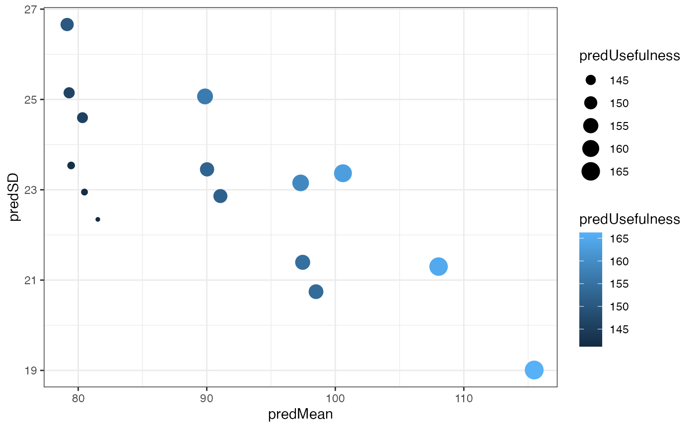

library(genomicMateSelectR)
#> Loading required package: tibble
#> Loading required package: dplyr
#>
#> Attaching package: 'dplyr'
#> The following objects are masked from 'package:stats':
#>
#> filter, lag
#> The following objects are masked from 'package:base':
#>
#> intersect, setdiff, setequal, union
#> Loading required package: tidyr
#> Loading required package: purrrThe following will be a demonstration of the core functions for predicting mate selection criteria available in genomicMateSelectR.
I generated simulated data, included in the package (accessible via data()), which should clarify the input format(s) required.
The example input data will be explained and used in the vignette below.
Simulation was conducted with the package AlphaSimR.
In a subsequent section, we will dig into the details and more fully explore all the available options in genomicMateSelectR. First, a quick demo of the predictCrosses() function using (mostly) ready-to-go pre-prepared input data.
To predict cross variance, 4 inputs are required:
First input is a matrix,haploMat with two rows per individual and one column per SNP locus.
Alleles coded {0,1}. rownames(haploMat) contains sample IDs (“GID”) with haplotypes distinguished by the mandatory suffixes “_HapA” and “_HapB”. colnames(haploMat) correspond to SNP IDs (i.e. \(chr \_ pos\)), currently requires that chromosomes be distinguished using integers; no prefix to SNP IDs is allowed (i.e. 1_2 not chr1_2 and also not anything like A_2). In this example, the GIDs are all numbers, they are from simulated data; in practice they can be any alphanumeric string.
data(haploMat); str(haploMat)
#> int [1:600, 1:100] 0 1 1 1 1 1 1 0 0 1 ...
#> - attr(*, "dimnames")=List of 2
#> ..$ : chr [1:600] "1_HapA" "1_HapB" "2_HapA" "2_HapB" ...
#> ..$ : chr [1:100] "1_2" "1_3" "1_6" "1_7" ...
haploMat[1:6,1:8]
#> 1_2 1_3 1_6 1_7 1_8 1_11 1_14 1_17
#> 1_HapA 0 0 1 0 0 0 1 1
#> 1_HapB 1 0 1 0 0 0 0 0
#> 2_HapA 1 0 1 0 0 0 0 0
#> 2_HapB 1 0 0 1 1 0 0 1
#> 3_HapA 1 0 1 0 0 0 0 0
#> 3_HapB 1 0 1 0 0 0 1 1For now, to use predictCrosses(), both a haploMat and another, related matrix (dosages) are required as input.
The matrix dosages has one row per individual sample and one column per SNP marker. Column-names are the same as for haploMat. rownames are the same prefix as in haploMat, but no suffix (“_HapA” or “_HapB”). Genotypes are coded {0, 1, 2} counting the number of (usually) the alternative allele. Important that the counted allele is the same allele as indicated by the value 1 in the haploMat.
data("doseMat")
str(doseMat)
#> int [1:300, 1:100] 1 2 2 1 1 0 1 1 1 2 ...
#> - attr(*, "dimnames")=List of 2
#> ..$ : chr [1:300] "1" "2" "3" "4" ...
#> ..$ : chr [1:100] "1_2" "1_3" "1_6" "1_7" ...
doseMat[1:3,1:8]
#> 1_2 1_3 1_6 1_7 1_8 1_11 1_14 1_17
#> 1 1 0 2 0 0 0 1 1
#> 2 2 0 1 1 1 0 0 1
#> 3 2 0 2 0 0 0 1 1NOTE: The dual dosages and haploMat input requirement is because most users will be predicting cross means + variances and currently, the function predCrossMeans(), which is used internally, requires dosages and predCrossVars() needs a haploMat. Its computationally more efficient (I think) to avoid converting haplotype matrices into dosage matrices internally, thus I demand both be specified. On the improvement to-do list.
The second input, recombFreqMat is a square-symmetric matrix, with dimension p-markers by p-markers. The elements of recombFreqMat, should actually be 1-2*recombFreqMat, meaning 1 minus 2 times the expected frequency of recombination between pairs of loci; a decision made for computational efficiency.
The usual starting point to create this matrix will be a centimorgan-scale genetic map. genomicMateSelectR provides a helper function genmap2recombfreq() to facilitate the conversion.
Users can input their genetic map as a named, numeric vector as shown below (genmap).
data(genmap);
str(genmap)
#> Named num [1:100] 0.366 1.014 5.598 6.46 7.216 ...
#> - attr(*, "names")= chr [1:100] "1_2" "1_3" "1_6" "1_7" ...
genmap[1:10]
#> 1_2 1_3 1_6 1_7 1_8 1_11 1_14
#> 0.3664138 1.0141046 5.5980510 6.4599211 7.2155092 9.0206727 12.7646012
#> 1_17 1_20 1_21
#> 14.2529985 16.2965964 16.8133229The input format for predictCrosses(), for reasons of computational efficiency, is actually 1-2*recombFreqMat where recombFreqMat is a
recombFreqMat<-genmap2recombfreq(genmap, nChr = 2)
str(recombFreqMat)
#> num [1:100, 1:100] 0 0.363 0.5 0.5 0.5 ...
#> - attr(*, "dimnames")=List of 2
#> ..$ : chr [1:100] "1_2" "1_3" "1_6" "1_7" ...
#> ..$ : chr [1:100] "1_2" "1_3" "1_6" "1_7" ...
recombFreqMat[1:5,1:5]
#> 1_2 1_3 1_6 1_7 1_8
#> 1_2 0.0000000 0.3631033 0.4999857 0.4999975 0.4999994
#> 1_3 0.3631033 0.0000000 0.4999478 0.4999907 0.4999979
#> 1_6 0.4999857 0.4999478 0.0000000 0.4108012 0.4803183
#> 1_7 0.4999975 0.4999907 0.4108012 0.0000000 0.3896748
#> 1_8 0.4999994 0.4999979 0.4803183 0.3896748 0.0000000Now calc. 1-2*recombFreqMat.
recombFreqMat<-1-(2*recombFreqMat)
recombFreqMat[1:5,1:5]
#> 1_2 1_3 1_6 1_7 1_8
#> 1_2 1.000000e+00 2.737934e-01 2.856654e-05 5.096204e-06 1.124479e-06
#> 1_3 2.737934e-01 1.000000e+00 1.043361e-04 1.861332e-05 4.107035e-06
#> 1_6 2.856654e-05 1.043361e-04 1.000000e+00 1.783976e-01 3.936349e-02
#> 1_7 5.096204e-06 1.861332e-05 1.783976e-01 1.000000e+00 2.206503e-01
#> 1_8 1.124479e-06 4.107035e-06 3.936349e-02 2.206503e-01 1.000000e+00This corresponds to the input to predictCrosses(recombFreqMat=) and the example dataset included with the package: data("recombFreqMat")
The third input, for predictCrosses(snpeffs=) are marker-effects from genome-wide marker regression e.g. RR-BLUP.
Marker-effects are supplied as a tibble with one row per trait, one chr-type column named Trait and one or more list-type columns containing SNP-effects. Each element of each list-type SNP-effects column corresponds to effects for a single trait, and contains a matrix with a single column, rownames corresponding to SNP IDs and should match the IDs in recombFreqMat and haploMat.
The number and required column names for the SNP-effect list-type columns depends on the value of modelType==. There are 3 model types implemented "A", "AD" and "DirDom". The predictCrosses() function is designed to be run with output produced by running the runGenomicPredictions() function using the same modelType setting. Both are designed to ensure / encourage the correct formulation of additive+dominance models.
For this quick example, the additive-only model: modelType="A". I’ll introduce each model later and explain the correct inputs / expected outputs for those.
The example dataset data(snpeffsA) is gpredsA$genomicPredOut[[1]] where gpreds is the output of running runGenomicPredictions() with modelType = "A".
data(snpeffsA)
snpeffsA
#> # A tibble: 2 × 5
#> Trait gblups varcomps fixeffs allelesubsnpeff
#> <chr> <list> <list> <list> <list>
#> 1 Trait1 <tibble [300 × 2]> <df [2 × 4]> <df [1 × 5]> <dbl [100 × 1]>
#> 2 Trait2 <tibble [300 × 2]> <df [2 × 4]> <df [1 × 5]> <dbl [100 × 1]>Because snpeffsA is the output of runGenomicPredictions(), there are columns that are not required and will be ignored by predictCrosses(). The unecessary columns are gblups, varcomps and fixeffs.
Required:
snpeffsA %>% dplyr::select(Trait,allelesubsnpeff)
#> # A tibble: 2 × 2
#> Trait allelesubsnpeff
#> <chr> <list>
#> 1 Trait1 <dbl [100 × 1]>
#> 2 Trait2 <dbl [100 × 1]>Two rows, one for each trait. One list-column, required to be labelled allelsubsnpeff, containing a single-column matrix of SNP-effects, rownames identifying SNP IDs.
snpeffsA$allelesubsnpeff[[1]] %>% head
#> [,1]
#> 1_2 14.6901150
#> 1_3 0.4877389
#> 1_6 4.3651094
#> 1_7 -1.9612765
#> 1_8 -2.2205335
#> 1_11 2.7950027
summary(snpeffsA$allelesubsnpeff[[1]])
#> V1
#> Min. :-17.6166
#> 1st Qu.: -4.1909
#> Median : 0.4571
#> Mean : 0.6947
#> 3rd Qu.: 5.3649
#> Max. : 27.7530Lastly, we just need to tell predictCrosses(), which crosses to predict. The input to argument CrossesToPredict= should be a tibble or data.frame with two-columns. Columns should be character-class (no factors!), column names should be sireID and damID. Names should be present in the rownames of haploMat and the row/colnames of recombFreqMat.
There is a helper function crosses2predict() that takes a vector of parents as input and creates a data.frame of all pairwise matings, including self-crosses, but excluding reciprocal crosses, i.e. use as male == use as female. Basically crosses2predict() specifies crosses on the diagonal and in the upper-triangle of a potentially square-symmetrical mating matrix.
Here, I’ll just randomly choose 5 parents and make a list of the 15 CrossesToPredict.
set.seed(42);
parents<-sample(x = snpeffsA$gblups[[1]]$GID, size = 5, replace = F)
CrossesToPredict<-crosses2predict(parents)
CrossesToPredict %>% head
#> # A tibble: 6 × 2
#> sireID damID
#> <chr> <chr>
#> 1 49 49
#> 2 49 153
#> 3 49 74
#> 4 49 228
#> 5 49 146
#> 6 153 153
str(CrossesToPredict)
#> tibble [15 × 2] (S3: tbl_df/tbl/data.frame)
#> $ sireID: chr [1:15] "49" "49" "49" "49" ...
#> $ damID : chr [1:15] "49" "153" "74" "228" ...And behold, we have the stuff we need to predict crosses.
Selection Indices:genomicMateSelectR is built to facilitate mating choices based on multiple traits, particularly using a user-specified set of weights (SIwts) to produce cross merit predictions on a linear selection index (selInd). When supplied multiple traits, predictCrosses() will predict both the variances of those traits and their covariance in each family. When the user specifies selInd = T and supplies a vector of weights with names matching the trait names, predictCrosses() will add predictions for a new composite trait, SELIND to the output.
SIwts are used as-is by predictCrosses() so the user is responsible for choosing “good” values; a topic beyond the scope of this manual / vignette.
crossPreds<-predictCrosses(modelType="A",
selInd = T, SIwts = SIwts,
CrossesToPredict=CrossesToPredict,
snpeffs=snpeffsA,
dosages=doseMat,
haploMat=haploMat,
recombFreqMat=recombFreqMat)
#> [1] "Predicting cross variance parameters"
#> [1] "Done predicting fam vars. Took 0.07 mins for 15 crosses"
#> [1] "Predicting cross means"
#> [1] "Computing SELECTION INDEX means and variances."Now we can quickly examine the output.
Produces a single-row tibble (basically a 2 element list) with two columns tidyPreds and rawPreds.
crossPreds
#> # A tibble: 1 × 2
#> tidyPreds rawPreds
#> <list> <list>
#> 1 <tibble [45 × 9]> <named list [2]>Most users and breeders will work with the tidyPreds. This simplified output was designed especially for those interested in selections based on SELIND.
Each row contains relevant predictions for a single trait in a single cross. Trait covariances are excluded from this output in order to show both mean (predMean), variance / standard deviation (predVar, predSD) and usefulness (predUsefulness) side-by-side.
crossPreds$tidyPreds[[1]]
#> # A tibble: 45 × 9
#> sireID damID Nsegsnps predOf Trait predMean predVar predSD predUsefulness
#> <chr> <chr> <int> <chr> <chr> <dbl> <dbl> <dbl> <dbl>
#> 1 49 49 22 BV SELIND 115. 361. 19.0 166.
#> 2 49 49 22 BV Trait1 194. 707. 26.6 265.
#> 3 49 49 22 BV Trait2 -119. 1519. 39.0 -15.1
#> 4 49 153 46 BV SELIND 108. 454. 21.3 165.
#> 5 49 153 46 BV Trait1 174. 1079. 32.8 262.
#> 6 49 153 46 BV Trait2 -89.4 1813. 42.6 24.3
#> 7 49 74 48 BV SELIND 97.5 458. 21.4 155.
#> 8 49 74 48 BV Trait1 165. 974. 31.2 249.
#> 9 49 74 48 BV Trait2 -106. 1510. 38.9 -2.05
#> 10 49 228 53 BV SELIND 97.3 536. 23.2 159.
#> # … with 35 more rows
crossPreds$tidyPreds[[1]] %>% str
#> tibble [45 × 9] (S3: tbl_df/tbl/data.frame)
#> $ sireID : chr [1:45] "49" "49" "49" "49" ...
#> $ damID : chr [1:45] "49" "49" "49" "153" ...
#> $ Nsegsnps : int [1:45] 22 22 22 46 46 46 48 48 48 53 ...
#> $ predOf : chr [1:45] "BV" "BV" "BV" "BV" ...
#> $ Trait : chr [1:45] "SELIND" "Trait1" "Trait2" "SELIND" ...
#> $ predMean : num [1:45] 115 194 -119 108 174 ...
#> $ predVar : num [1:45] 361 707 1519 454 1079 ...
#> $ predSD : num [1:45] 19 26.6 39 21.3 32.8 ...
#> $ predUsefulness: num [1:45] 166.2 264.7 -15.1 164.9 261.6 ...Additional columns in tidyPreds:
Nsegsnps: the number of SNPs expected to segregate in this cross. For compute efficiency, when predicting cross variances, genomicMateSelectR detects which SNPs will actually cause genetic variance within the cross, and restricts the analysis to those loci.
predOf: “BV” for breeding value (all models), “TGV” for total genetic values (models “AD” and “DirDom” only). Here only “BV” because modelType="A".
predUsefulness is predMean + stdSelInt*predSD, where stdSelInt is the standardized selection intensity input to predictCrosses(), stdSelInt = 2.67 by default.
Complete details of the predictions, especially including trait-trait covariance predictions are available in the two-element, named-list contained in rawPreds:
crossPreds$rawPreds[[1]] %>% str
#> List of 2
#> $ predMeans:List of 1
#> ..$ : tibble [30 × 7] (S3: tbl_df/tbl/data.frame)
#> .. ..$ Trait : chr [1:30] "Trait1" "Trait1" "Trait1" "Trait1" ...
#> .. ..$ sireID : chr [1:30] "49" "49" "49" "49" ...
#> .. ..$ damID : chr [1:30] "49" "153" "74" "228" ...
#> .. ..$ sireGEBV: num [1:30] 194 194 194 194 194 ...
#> .. ..$ damGEBV : num [1:30] 194 154 137 111 111 ...
#> .. ..$ predOf : chr [1:30] "MeanBV" "MeanBV" "MeanBV" "MeanBV" ...
#> .. ..$ predMean: num [1:30] 194 174 165 152 152 ...
#> $ predVars :List of 1
#> ..$ : tibble [45 × 8] (S3: tbl_df/tbl/data.frame)
#> .. ..$ sireID : chr [1:45] "49" "49" "49" "49" ...
#> .. ..$ damID : chr [1:45] "49" "49" "49" "153" ...
#> .. ..$ Nsegsnps : int [1:45] 22 22 22 46 46 46 48 48 48 53 ...
#> .. ..$ ComputeTime: Named num [1:45] 0.268 0.268 0.268 0.246 0.246 ...
#> .. .. ..- attr(*, "names")= chr [1:45] "elapsed" "elapsed" "elapsed" "elapsed" ...
#> .. ..$ Trait1 : chr [1:45] "Trait1" "Trait2" "Trait1" "Trait1" ...
#> .. ..$ Trait2 : chr [1:45] "Trait1" "Trait2" "Trait2" "Trait1" ...
#> .. ..$ predOf : chr [1:45] "VarBV" "VarBV" "VarBV" "VarBV" ...
#> .. ..$ predVar : num [1:45] 707 1519 -350 1079 1813 ...At crossPreds$rawPreds[[1]]$predMeans are the predictions for cross means, and at crossPreds$rawPreds[[1]]$predVars are the predictions for cross variances.
For sake of example, we should make a plot (predMean vs. predSD), for “fun” and then make a selection of the top 5 crosses, based on their predicted usefulness on the selection index:
crossPreds$tidyPreds[[1]] %>%
dplyr::filter(Trait=="SELIND") %>%
ggplot2::ggplot(.,ggplot2::aes(x=predMean,y=predSD,
color=predUsefulness, size=predUsefulness)) +
ggplot2::geom_point() + ggplot2::theme_bw()
crossPreds$tidyPreds[[1]] %>%
dplyr::filter(Trait=="SELIND") %>%
dplyr::slice_max(order_by = predUsefulness, n = 5)
#> # A tibble: 5 × 9
#> sireID damID Nsegsnps predOf Trait predMean predVar predSD predUsefulness
#> <chr> <chr> <int> <chr> <chr> <dbl> <dbl> <dbl> <dbl>
#> 1 49 49 22 BV SELIND 115. 361. 19.0 166.
#> 2 49 153 46 BV SELIND 108. 454. 21.3 165.
#> 3 153 153 33 BV SELIND 101. 546. 23.4 163.
#> 4 49 228 53 BV SELIND 97.3 536. 23.2 159.
#> 5 153 228 55 BV SELIND 89.9 628. 25.1 157.
# arrange(desc(predUsefulness)) %>% slice(1:5) # same as `slice_max`That concludes the quick demo, focused on input formatting and output contents, using the basic additive-model in the function predictCrosses() to get selection-index cross usefulness predictions.
In subsequent vignettes I will provide:
modelType="AD", modelType="DirDom and their correct useage. Includes a theoretical introduction, followed by a demonstration of the use of runGenomicPredictions() and predictCrosses() to accomplish predictions of individual and cross performances.runCrossVal(), runParentWiseCrossVal(),